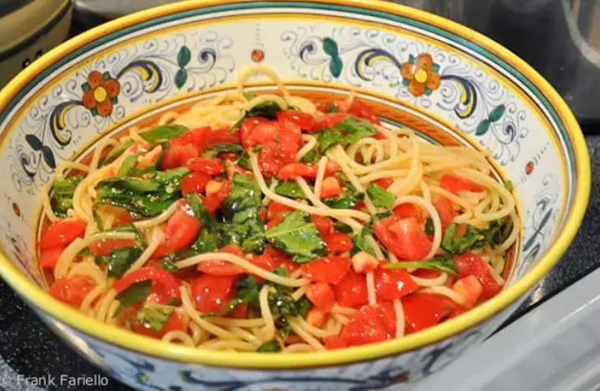

Pasta al Pomodoro

För den enkla livsnjutaren
Här kommer en av mina absoluta favoriter. Väldigt få ingredienser men ack så gott.
Min Pasta al Pomodoro skiljer sig lite från den klassiska varianten då såsen är mycket mer rinnig och jag använder gärna Penne istället för Spaghetti.
Ingredienser
- 70g pasta per person
- Kokande vatten
- En näve salt
- Olivolja
- Småtomater - delade
- Parmesanost - riven
- 2 vitlöksklyftor per person - hackade
- Persilja
Gör såhär:
- Häll i pastan i kokande vatten
- Rikligt med olivolja, vitlök och tomater i den en kall panna
- Stek på medelhög värme tills vitlöken blir lite brun (blanda inte ihop bruna tomatkärnor med hackad vitlök ;)
- Tryck till tomaterna med din slev när de blivit lite mjuka för att få ut den goda saften.
- Häll i 3-minuter-för-tidigt-pastan i stekpannan tillsammans med en deciliter pastavatten och sätt på värmen igen om du var tvungen att sänka/stänga av tidigare.
- Riv ner några drag parmesanost
- Fortsätt häll i pastavatten när det reducerat
- Ta bort från plattan när pastan är klar, det ska vara rinnigt i botten men nära till såsigt. Den tjocknar till sig om några minuter.
- Blanda i persilja och smaka av med salt och peppar.
- Servera och toppa med permasanost och olivolja.